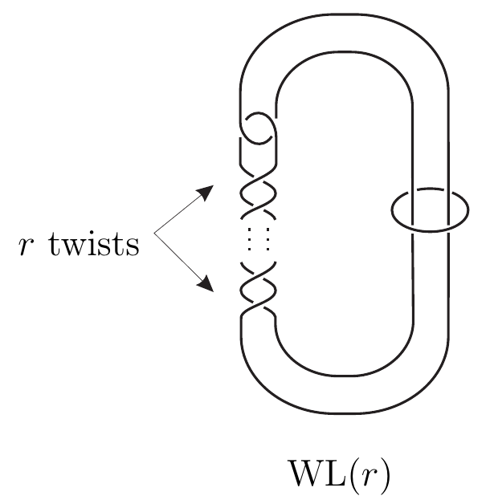

The failure of the AJ conjecture for Whitehead doubles is formalized in Lean 4, with kernel replay, axiom checks, and independent nanoda and Comparator verification.
Abstract
For marked Whitehead doubles of torus knots with coprime parameters $2\le r<s$, the AJ conjecture fails for both clasp signs, both companion chiralities, and every integer twist. The zero-framed signed unreduced colored Jones sequence has a nonzero rationally saturated annihilator. Every nonzero primitive representative specializes nontrivially at $t=-1$ with the meridian variable $M$ independent. With $L$ the longitude variable, the specialization contains the irreducible quadratic $E=L^2-(M^4-4M^2+1)L+M^4$ for the negative clasp and $M^4E(M^{-1},L)$ for the positive clasp. The corresponding quadratic is coprime to the full classical $A$-polynomial, including $L-1$, over $\mathbb{Q}(M)[L^{\pm1}]$, so the discrepancy persists when each irreducible factor is counted once. The curve $E=0$ comes from the marked Whitehead link exterior with its axis cusp complete. For the displayed monic polynomial, $πm(E)$ is the unsigned volume of that two-cusped exterior. We use the actual Jones sequence to select a right divisor of the satellite transfer operator. Rational factor tests show that the quadratic survives in this divisor, and the two marked companion fillings exclude it as a component of the satellite boundary curve.
Problem
The AJ conjecture relates the minimal recurrence of the colored Jones polynomial to the classical A-polynomial. The question is whether it holds for marked Whitehead doubles of torus knots T(r,s) with coprime 2≤r<s, across both clasp signs, both companion chiralities, and every integer twist.
Approach
A finite satellite transfer built from Zheng's formula carries the companion torus recurrence to an operator acting on the reduced satellite sequence. Rational factorization criteria use logarithmic residues of quotient determinants at crossings. The actual Jones sequence is then used to select a right divisor of the transfer operator. On the classical side, two marked companion fillings exclude the quadratic E from the A-polynomial. The main theorem was formalized in Lean with AI-model assistance and checked by Lean's kernel, nanoda, and Comparator.

Figure 2. Zheng’s Whitehead-link diagram (arXiv v4, p. 4) [ 30 ] , with his twist label r written as \ell . The positive twist is the one in ( 4 ). The axis belt surrounds the two strands of the outer component. For the untwisted trefoil the nonabelian companion restriction gives the filling slope \mu_{\rm ax}\lambda_{\rm ax}^{\,6} .
Results
For each case, the t=-1 specialization of the minimal annihilator contains the irreducible quadratic E=L^2-(M^4-4M^2+1)L+M^4, or its positive-clasp variant. This quadratic is coprime to the full classical A-polynomial, so the AJ conjecture fails even when each irreducible factor is counted once. The Mahler measure of E, multiplied by π, equals the volume of the two-cusped Whitehead link exterior.
T+
T-
negative clasp
E
E
positive clasp
E^∨
E^∨
Factor of the specialization missing from the A-polynomial, by clasp sign and companion chirality